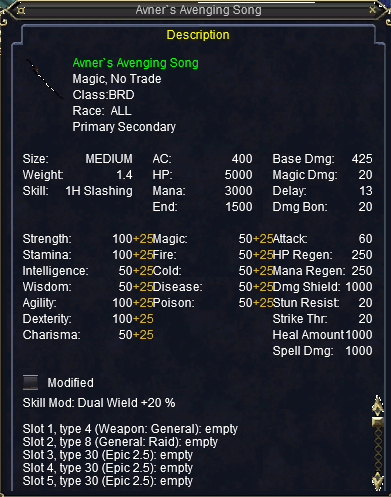

Section 1: MQ2Melee
Section 1a: Introduction
MQ2Melee automation focuses mainly on two elements: holyshits and downshits.
Holyshits: These run when you are in combat.
Downshits: These run when you are out of combat.
However before we get to these, I want to make sure that you have a .ini file ready to edit. These files have a naming convention:
<Server Short Name>_<Character Name>.ini
Ex: Xais_Vixenary.ini
You can force MQ2Melee to make a .ini file by typing in '/melee save' and will be saved in your main MQ2 folder.
It will look something like this:
[MQ2Melee]
aggro = 1
bash = 1
disarm = 1
enrage = 1
facing = 1
feigndeath = 30
harmtouch = 0
infuriate = 1
kick = 1
melee = 1
petassist = 1
petrange = 75
plugin = 1
provoke1 = 1222
provokeend = 20
provokemax = 1
provokeonce = 1
resume = 75
stickrange = 75
taunt = 1
version = 6.020
So now that we have a file to edit, let's start working on the holy/downshits. To enable them, we follow the same style as the other elements in the file:
downflag<0-63> = 1
holyflag<0-63> = 1
Make sure that you enable the flag for the corresponding holy/downshit. Here is an example:
holyflag0 = 1
holyshit0 = /echo Hello Spam
Note: This will probably create a lot of spam, so you probably won't want to enter combat with this still active.
The next part is probably the hardest because you have access to everything MQ2 can do. I'm going to try and cover some of the common uses and let you take it from there.
Section 1b: Abilities
What I mean by 'Abilities' is just the regular stuff like Kick, Frenzy, etc. I will let you know that MQ2Melee already has flags for most of this, but I want to show you how to do it yourself.
Another important note is that there aren't commands like /kick or /frenzy, so we have to compromise and use the Actions window to set our abilities up.
The commands to use the abilities here are '/doability<1-6>.' So if I wanted to use Intimidation, then I would type '/doability 1.'
And since we only want to use this during combat, we'll want to use a holyshit:
holyshit0 = /doability 1
This is just part one complete though. The big problem with it now is that MQ2Melee will continuously try to use the ability even if it's on cooldown. We don't want that, so we need a way to tell it to only use the ability when it's ready. This involves using what's called an if-statement:
holyshit0 = /if (${Me.AbilityReady[Intimidation]} /doability 1)
I won't get into the nitty-gritty details of what exactly happens here, but essentially this if-statement checks to see if Intimidation is ready to use. If it is, then it will use the ability and wait until it's off cooldown again.
Now what if we only want to use this ability when the mob is low on hp? Luckily, there are also ways to tell how much health your target has.
holyshit0 = /if (${Me.AbilityReady[initmidation]} && (${Target.PctHPs} <= 25)) /doability 1
MQ2Melee will now only use the ability when it's ready and if the target is at, or below, 25% hp.
Section 1c: Combat Abilities

These are what people typically call Disciplines, or Discs.
The methodology behind these is very similar to what we just did. For my example, I'll be using the Thousand Blades disc:
/disc Thousand Blades
This is the command to actually use the disc, but typically we only want to use this when we're fighting a named:
holyshit1 = /if (${Me.CombatAbilityReady[Thousand Blades]} && ${Target.Name.Find[#]}) /disc Thousand Blades
The first part of this if-statement checks to see if the disc is ready to use, much like Intimidation. The second part checks to see if the mob has the '#' symbol in his name. This usually indicates a named mob.
Section 1d: Alt Abilities
These are just AAs. These follow essentially the same style as using the discs:
holyshit2 = /if (${Me.AltAbilityReady[Boastful Bellow]}) /casting "Boastful Bellow" alt
Hopefully this looks pretty familiar. The if-statement checks to see if Boastful Bellow is ready. The command we use after is the new part.
The /casting command is a feature of the MQ2Cast plugin, and it is much more reliable than the native EQ commands to activate AAs. The 'alt' at the end tells MQ2Cast that what we're trying to cast is an alt abilitiy.
Section 1e: Items

The last aspect I'll focus on here is items. And they follow much the same style as we're used to:
holyshit3 = /if (${Cast.Ready[Avner`s Avenging Song]}) /casting "Avner`s Avenging Song" item
The main difference here is that instead of looking at 'Me', we're using 'Cast.' This lets the MQ2Cast plugin check to see if the item is ready to cast.
If you want to see the full example, then I have it at the top of the page as a download link.
Note: If you're familiar with the /multiline command, then you can use it to string together a bunch of commands for using things like timers.
Section 2: Macros
This section could fill around 100 posts with all the different kinds of things you can do with macros, but for time sake, I’m going to keep it short and look at Xyph’s Autokill2 macro. You can find the macro at the top in the 'Required Materials' section.
I'll try to work you through the macro by splitting it into sections.
|#event Backstab "You backstab #1# for #2# points of damage."
This first line at the top references what we call events. Since Xyph actually commented out (denoted by the ' | '), I'll leave it at that for now.